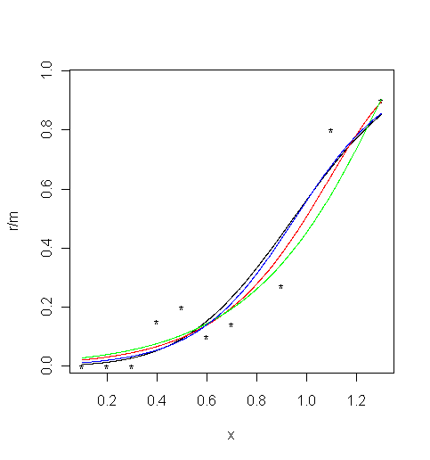
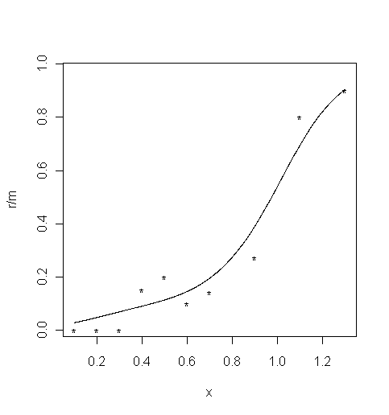

Model-free estimation of a psychometric function |
|
|---|---|
| Home | Downloads | Demonstration | Documentation | Examples | Functions | Contacts |
|---|
Miranda, M. A. & Henson, D. B. “Perimetric sensitivity and response variability in glaucoma with single-stimulus automated perimetry and multiple-stimulus perimetry with verbal feedback”, Acta Ophthalmologica, 86, 202-206, 2008.
MatLab R A flash of light of variable intensity was presented repeatedly at a fixed location in the visual field of a subject who reported whether the flash was visible. There were 3–20 trials at each stimulus level.
Load data
data("01_Miranda")
x = example01$x
r = example01$r
m = example01$mLoaded R
dataconsist of three columns:Parametric fitting
- Stimulus level,
x- Number of successes,
r- Number of trials,
mFour different parametric models are fitted to these data: Gaussian (probit), Weibull, reverse Weibull and logistic. The parameters of the models are estimated in the Matlab functions
binomfit_limsfor the probit and logit links. The other two models require an estimate of the exponentKand the estimation is performed in the functionsbinom_weibandbinom_revweib. The values of the fitted functions at specified points are calculated in the functionbinomval_lims.First plot the psychometric data (black dots):
plot( x, r / m, xlim = c( 0.1, 1.302 ), ylim = c( 0.0165, 0.965 ), type = "p", pch="*" ) # Limits set to match the MatLab ones1. For the Gaussian cumulative distribution function (black curve):
val <- binomfit_lims( r, m, x, link = "probit" )
# Plot the fitted curve
numxfit <- 999 # Number of points to be generated minus 1
xfit <- (max(x)-min(x)) * (0:numxfit) / numxfit + min(x)
pfit <- predict( val$fit, data.frame( x = xfit ), type = "response" )
lines(xfit, pfit )2. For the Weibull function (red curve):
val <- binom_weib( r, m, x )
# Plot the fitted curve
pfit <- predict( val$fit, data.frame( x = xfit ), type = "response" )
lines(xfit, pfit, col = "red" )3. For the reverse Weibull function (green curve):
val <- binom_revweib( r, m, x )
# Plot the fitted curve
pfit <- predict( val$fit, data.frame( x = xfit ), type = "response" )
lines(xfit, pfit, col = "green" )4. For the logistic function (blue curve):

val <- binomfit_lims( r, m, x, link = "logit" )
# Plot the fitted curve
pfit<-predict( val$fit, data.frame( x = xfit ), type = "response" )
lines(xfit, pfit, col = "blue" )Local linear fitting
Local linear fitting is performed in the function
locglmfit, which returns the fitted values at specified points. This function requires a bandwidth as an input. The bandwidthbwdis typically chosen by a cross-validation. There are three different loss functions used in cross-validation: ISE defined on a p-scale, ISE defined on an eta-scale, and deviance.
bwd_min <- min( diff( x ) )
bwd_max <- max( x ) - min( x )
bwd <- bandwidth_cross_validation( r, m, x, c( bwd_min, bwd_max ) )The values of cross-validation bandwidths are
bwd = 0.1007for ISE on a p-scale,bwd = 0.2999for ISE defined on an eta-scale,bwd = 0.2959for deviance.Here, the bandwidth obtained with cross-validated deviance is used.

bwd <- bwd$deviance # Choose the estimate based on cross-validated deviance
pfit <- locglmfit( xfit, r, m, x, bwd )$pfit
plot( x, r / m, xlim = c( 0.1, 1.302 ), ylim = c( 0.0165, 0.965 ), type = "p", pch="*" ) # Limits set to match the MatLab ones
lines(xfit, pfit )From the fitted values of the psychometric function, the threshold and slope for a requied threshold level, here
prob= 0.5, are calculated in the functionthreshold_slope. The functionsbootstrap_sd_thandbootstrap_sd_slestimate their standard deviations by the percentile bootstrap method. In the following example, 200 bootstrap replications were used. Note that these functions, as with all bootstrap methods, return similar but slightly different values at each execution.
prob <- 0.5 # Required threshold level
niter <- 200 # Number of bootstrap iterations
thr_sl <- threshold_slope( pfit, xfit, prob )
sd_th <- bootstrap_sd_th( prob, r, m, x, niter, bwd ) # Be patient, slow process
sd_sl <- bootstrap_sd_sl( prob, r, m, x, niter, bwd ) # Be patient, slow processExamples of values returned by R are as follows:
threshold (sd_th)= 0.9745 (0.0558)slope (sd_sl)= 1.5536 (0.2941)Bootstrap estimates of confidence intervals for the threshold and slope are calculated by the functions
bootstrap_ci_thandbootstrap_ci_sl;here a significance levelalpha= 0.05 was used. Again, the these functions return similar but slightly different values at each execution.
prob <- 0.5 # Required threshold level
alpha <- 0.05 # Significance level for the confidence intervals
niterci <- 1000 # Number of bootstrap iterations
ci_th <- bootstrap_ci_th( prob, r, m, x, niterci, bwd, alpha ) # Be patient, slow process
ci_sl <- bootstrap_ci_sl( prob, r, m, x, niterci, bwd, alpha ) # Be patient, slow processExamples of confidence intervals returned by R are as follows:
Back to Examples
ci_th = [0.8363,1.0538]ci_sl = [0.9863,2.1536]